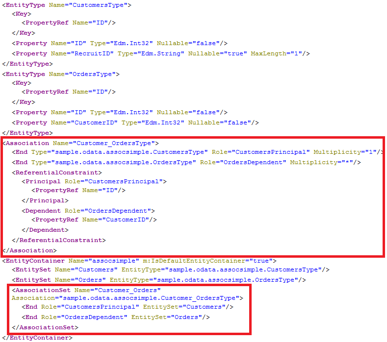
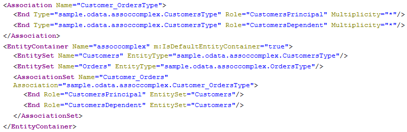
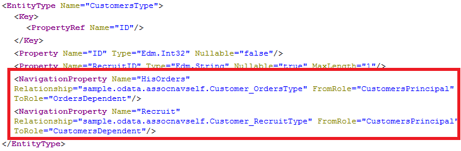

You can define associations between entities to express relationships between entities. With associations it is possible to reflect foreign key constraints on database tables, hierarchies and other relations between database objects. OSDL supports simple associations, where the information about the relationship is stored in one of the participating entities, and complex associations, where the relationship information is stored in a separate association table.
Associations themselves are freestanding. On top of them you can specify which of the entities participating in the relationship can navigate over the association to the other entity by creating NavigationPropertys.
For the examples used to illustrate OData associations, we use the tables customer and order:
COLUMN TABLE "sample.odata::customer" (
"ID" INTEGER NOT NULL,
"OrderID" INTEGER,
PRIMARY KEY ("ID")
); COLUMN TABLE "sample.odata::order" (
"ID" INTEGER NOT NULL,
"CustomerID" INTEGER,
PRIMARY KEY ("ID")
); There is one relationship order.CustomerID to customer.ID.
The definition of an association requires you to specify a name, which references two exposed entities and whose columns keep the relationship information. To distinguish the ends of the association, you must use the keywords principal and dependent. In addition, it is necessary to denote the multiplicity for each end of the association.
service {
"sample.odata::customer" as "Customers";
"sample.odata::order" as "Orders";
association "Customer_Orders" with referential constraint principal "Customers"("ID") multiplicity "1" dependent "Orders"("CustomerID") multiplicity "*";
} The association in the example above with the name Customer_Orders defines a relationship between the table customer, identified by its EntitySet name Customers, on the principal end, and the table order, identified by its entity set name Orders, on the dependent end. Involved columns of both tables are denoted in braces ({}) after the name of the corresponding entity set. The multiplicity keyword on each end of the association specifies their cardinality - in this example, one-to-many.
The with referential constraint syntax ensures that the referential constraint check is enforced at design time, for example, when you activate the service definition in the SAP HANA repository. The referential constraint information appears in the metadata document.
SAP strongly recommends that you use the with referential constraint syntax.
The number of columns involved in the relationship must be equal for both ends of the association, and their order in the list is important. The order specifies which column in one table is compared to which column in the other table. In this simple example, the column customer.ID is compared to order.CustomerID in the generated table join.
As a result of the generation of the service definition above, an AssociationSet named Customer_Orders and an Association with name Customer_OrdersType are generated:
http://<myHANAServer>:<port>/odata/services/<myService>.xsodata/$metadata
 association "Customer_Recruit" with referential constraint principal "Customers"("ID") multiplicity "1" dependent "Customers"("RecruitID") multiplicity "*"; For the following example of a complex association, an additional table named knows is introduced that contains a relationship between customers.
Table definition: sample.odata:knows.hdbtable
COLUMN TABLE "sample.odata::knows" (
"KnowingCustomerID" INTEGER NOT NULL,
"KnowCustomerID" INTEGER NOT NULL,
PRIMARY KEY ("KnowingCustomerID","KnowCustomerID")
); Relationships that are stored in association tables such as knows can be similarly defined as simple associations. Use the keyword over to specify the additional table and any required columns.
Service definition: sample.odata:assoccomplex.xsodata
service {
"sample.odata::customer" as "Customers";
"sample.odata::order" as "Orders";
association "Customer_Orders"
principal "Customers"("ID") multiplicity "*"
dependent "Customers"("ID") multiplicity "*"
over "sample.odata::knows" principal ("KnowingCustomerID") dependent ("KnownCustomerID");
} With the keywords principal and dependent after over you can specify which columns from the association table are joined with the principal respectively dependent columns of the related entities. The number of columns must be equal in pairs, and their order in the list is important.
The generated Association in the metadata document is similar to the one created for a simple association except that the ReferentialConstraint is missing:
http://<myHANAServer>:<port>/odata/services/<myService>.xsodata/$metadata
By only defining an association, it is not possible to navigate from one entity to another. Associations need to be bound to entities by a NavigationProperty. You can create them by using the keyword navigates:
Service definition: sample.odata:assocnav.xsodata
service {
"sample.odata::customer" as "Customers" navigates ("Customer_Orders" as "HisOrders");
"sample.odata::order" as "Orders";
association "Customer_Orders" principal "Customers"("ID") multiplicity "1" dependent "Orders"("CustomerID") multiplicity "*";
} The example above says that it is possible to navigate from Customers over the association Customer_Order via the NavigationProperty named "HisOrders".
The right association end is determined automatically by the entity set name. But if both ends are bound to the same entity, it is necessary to specify the starting end for the navigation. This is done by specifying either from principal or from dependent which refer to the principal and dependent ends in the association.
Service definition: sample.odata:assocnavself.xsodata
service {
"sample.odata::customer" as "Customers"
navigates ("Customer_Orders" as "HisOrders","Customer_Recruit" as "Recruit" from principal);
"sample.odata::order" as "Orders";
association "Customer_Orders" principal "Customers"("ID") multiplicity "1" dependent "Orders"("CustomerID") multiplicity "*";
association "Customer_Recruit" principal "Customers"("ID") multiplicity "1" dependent "Customers"("RecruitID") multiplicity "*";
} In both cases a NavigationProperty is added to the EntityType.
http://<myHANAServer>:<port>/odata/services/<myService>.xsodata/$metadata
